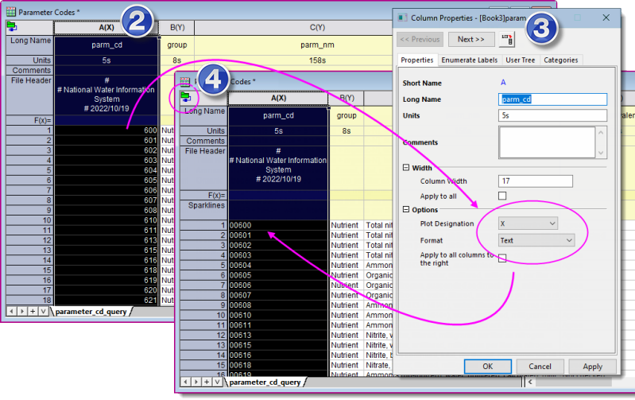

FAQ-1154 Wie importiere ich Spalten mit Excel- oder ASCII-Daten, die in der Quelldatei wie Zahlen aussehen, aber wie kategoriale Daten behandelt werden müssen?
treat-numbers-as-text-on-import
Letztes Update: 20.10.2022
Gelegentlich enthalten Datendateien numerische Codes, die Kategorien darstellen sollen (z. B. in Karten- oder Wasserqualitätsdaten). Ohne Eingriff werden solche Daten beim Import als numerisch behandelt und voranstehenden Nullen werden üblicherweise abgeschnitten.
- 
Die einfachste Lösung ist:
- Verbinden Sie die Datei und importieren Sie Ihre Datendatei.
- Suchen Sie im Importarbeitsblatt die Spalte(n), die fälschlicherweise als numerisch behandelt worden sind, klicken Sie mit der rechten Maustaste auf die Spaltenüberschrift und wählen Sie Eigenschaften.
- Setzen Sie in den Spalteneigenschaften das Format = Text und klicken Sie auf OK.
- Klicken Sie auf das grüne Symbol des Konnektors in der oberen linken Ecke des Arbeitsblatts und wählen Sie Import. Die vorhandenen Daten werden erneut importiert und dieses Mal sollten Ihre numerischen Codes als Text behandelt werden (d. h. voranstehende Nullen werden nicht abgeschnitten, Werte werden in der Arbeitsblattspalte links ausgerichtet).
Schlüsselwörter:USGS, Wasserqualität, Karteneinheit, Kartencode, Kategorie, Text